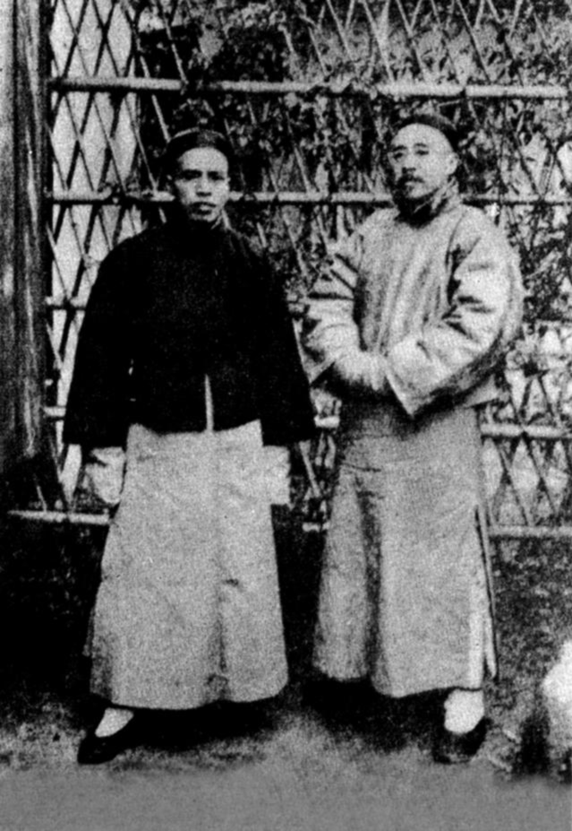

第 11 章
学者的目光
罗振玉在书桌上摊开一张照片。照片从日本辗转寄来，纸面泛黄，边缘有折痕。拍的是几页写卷，字迹模糊，可辨认出是唐人写经——那些在库房编号里留下空位的文书，终于以影像的方式，第一个字迹回到了追问者的眼前。
背面有铅笔标注，字迹潦草，写的是“敦煌石室本”。罗振玉把照片翻过来，对着窗口的光看了很久。

桌面另一边摊着另一张照片，同样的写卷，不同的段落。两张照片之间有重叠，中间缺了一段。缺的那一段在哪里，他不知道。
这是1909年前后的事。罗振玉当时在北京，伯希和刚把一批敦煌写卷带到京师，供中国学者观览。观览有限度。写卷在伯希和手里，他即将带回巴黎。
罗振玉和几位同人获准看了一部分，抄录了一部分。抄录时间很短。伯希和没有同意他们拍照，但允许他们抄。抄本后来成为国内最早的研究底本之一。
照片上的编号，罗振玉最初并不认识。他看到的只是写卷本身，不知道这些写卷在伯希和的箱子里已经有了编号，已经有了归属。他后来才慢慢知道，那些编号意味着什么。
两年后，1911年，罗振玉编了一本书，叫《敦煌石室遗书》。序言里有一段话，他写得很克制。
大意是说，这些材料得之传闻，或者据影本抄录，并非亲见原件。他用了“得之传闻”四个字。这四个字是实情。他确实没有亲见原件。他所见的是照片和抄本，伯希和的口头说明，以及中间人的转述。这些就是他的全部材料。
序言的措辞不是唯一的证据。同一时期，另一份出版物上，编者写得更清楚：所据为“影本”，非原件。影本者，照片或抄件之谓也。
这在当时不是个别做法。材料有限，亲见不易，学者们只好用影本。影本是权宜，也是起点。
罗振玉的抄本后来在学者之间流传。传抄过程中，错误在所难免。脱字、错字、断句之误，都是常事。就是这些有错误的抄本，支撑了最初几年的研究。学者们根据抄本写跋、写考订、写校记。他们没有原件可核，只能互校。甲抄本和乙抄本之间的差异，就是他们讨论的基础。
王国维也是这批学者中的一个。他大约在1912年前后开始接触敦煌材料。他见到的抄本，多来自罗振玉或其他同人的转寄。他给朋友的信里提到过，有些卷子“无从核”，有些“恐有误”。
无从核，就是没有办法核对原件。恐有误，就是抄本本身有问题。这些话是技术性的说明，语气平静。他清楚自己在什么材料条件下工作。
他在一封信里说得更直接：敦煌写卷，其佳者多在海外，国内所得，时时如此，无法可施。这封信的具体收信人，现有材料不足以确定。但句子本身是可靠的，语气也是可靠的。
无法可施，是一种承认。王国维的研究方法在当时是新颖的。他拿敦煌写卷与传世文献对勘，用写卷来校正传世本子。前提是写卷可靠。但写卷是抄本，抄本未必可靠。于是他又用传世文献来反校写卷。双向校勘，是学术上的推进。
推进的动力，恰恰来自材料的不完整。如果材料完整，如果原件在手，他可能不会如此精细地从事校勘。不完整逼出了精细。
1913年，罗振玉和王国维合编了一本书，叫《流沙坠简》。这本书处理的不是敦煌藏经洞的文书，是斯坦因在敦煌汉代烽燧遗址发现的简牍。简牍也是斯坦因带走的，照片和摹本由沙畹寄给罗振玉。罗振玉和王国维根据这些照片和摹本，完成了考释。
这是中国学者第一次系统处理斯坦因带走的材料。材料是斯坦因的，研究是中国学者的。
归属和研究之间，出现了分离。分离本身是一个信号。原件在伦敦，照片在北京。照片经过沙畹、罗振玉、王国维三手。每一手都可能引入误差。
但他们还是做了。做的结果，是一本至今仍有参考价值的著作。这本著作的学术质量，与材料的不完整成反比。材料越不完整，考释越细致。
细致的考释，需要精确的编号。编号来了。斯坦因带走的写卷，在大英博物馆入藏后陆续编号，前缀是S。伯希和带走的，在巴黎编号，前缀是P。
这些编号最初只见于海外目录，中国学者并不熟悉。罗振玉和王国维在《流沙坠简》里引用斯坦因的简牍时，用的是斯坦因原书里的编号，但那不是S.编号，是简牍的出土编号。S.编号体系的确立，是后来的事。
到了1910年代中期，S.和P.这两个前缀逐渐出现在中国学者的笔下。出现了引用，就出现了依赖。学者们开始在文章里写“见S.某某号”、“据P.某某号”。这些编号是他们从未亲见的原件的代号。
编号成了替身，替原件被引用、被讨论、被考订。这是编号转译的第一步。一件文书从敦煌洞中取出，运到伦敦或巴黎，入藏，编号，抄录，影印，寄回中国。中国学者拿到影印，看到编号，在文章里引用编号。
引用一多，编号就成了学术货币。货币流通的前提，是所有人都承认它的价值。S.和P.的价值，在于它们指向原件。但原件不在中国。承认编号的价值，就是承认原件在海外的现实。
编号转译的代价，是原有语境的剥离。一件写卷在藏经洞里的时候，它有物理位置，有同洞的邻居，有洞窟的整体环境。
运到伦敦之后，它被编号、装裱、单独存放。它的编号S.某某，只代表它在斯坦因序列里的位置，不代表它在敦煌的位置。中国学者引用S.某某号，引用的是伦敦的位置，不是敦煌的位置。洞窟里的关系被切断了。切断之后，研究还能继续。
手段是比对。学者们手里的抄本，有的来自伯希和，有的来自其他渠道。同一件写卷的不同抄本，可以互校。校出的差异，就是研究的材料。但比对的前提是知道比对的对象是同一件。
判断“同一件”的根据，是内容，不是编号。编号帮着确认内容，但编号本身不能替代内容。
王国维做过这样的比对。他在一篇文章里指出，某段文字在两个抄本中不同，其中一个抄本更优。他没有说哪个抄本更接近原件。他无法说，因为他没有原件。他能做的，是根据文义判断哪个抄本更优。文义判断的依据，是传世文献和逻辑。逻辑可以补材料之不足，但不能替代材料。
这种工作方式，塑造了中国敦煌学的早期性格。性格是在材料不完整的情况下，靠方法和判断力维持学术质量。方法越严，判断越慎，质量越高。质量高的研究，反过来又提高了学者对材料的鉴别力。
鉴别力提高之后，他们更清楚地知道缺什么。知道缺什么，就更想要。想要得不到，就更加关注。关注积累到一定程度，就变成了动力。
1910年代末到1920年代初，几位中国学者陆续发表敦煌研究文章。文章的题目各异，处理的问题各异，但引用编号的方式在趋同。S.和P.越来越频繁地出现在注释里。
有的文章开始统计：S.有多少卷，P.有多少卷，国内残存有多少卷。统计的结果是，海外多，国内少。
这个结果不新鲜，但统计之后，数字变得具体。具体数字比模糊感受更有力量。
具体的数字支撑具体的需求。学者们开始希望得到某些特定编号的写卷照片。不是泛泛地希望“国宝回归”，而是希望看到S.某某号、P.某某号。这些编号是学术工作的必需品。没有它们，某些考订无法完成。
这就是追索的学术前提。追索从编号开始。编号把散失变成了可计量的缺口。缺口有了编号，就有了对应的实体。实体远在海外，追索就有了具体的目标。目标是照片、抄本、影印、对照。
每一样都比“国宝”更具体，都更可操作。1920年代，董康去了一趟欧洲。他在伦敦和巴黎看了敦煌写卷。他是少数亲见海外原件的中国学者之一。他回来后，把见闻写进文章，也把一些照片带回来。他看到的编号，和他之前在中国引用过的编号，是同一批。编号对上了，原件就确认了。确认之后，他更清楚国内缺什么。董康的欧洲之行不是孤例。
同一时期，还有其他中国学者或通过书信，或通过中间人，与海外收藏机构建立联系。联系的目的是获取材料。
获取材料的依据，是编号。编号成了通信里的通用语言。中国学者写S.某某号，大英博物馆的工作人员能查到。这种跨海的通信，是追索的具体形态。
但通信的规模有限。能够通信的学者少，能够去欧洲的学者更少。大部分学者仍然只能靠抄本和照片。他们在国内，用二手材料，做一流研究。做出来的研究，证明他们有能力处理这些材料。能力证明了，话语权就有了基础。
话语权不是抽象的。它体现在具体的学术成果上。成果越多，引用越多，学者在国际学界的地位就越高。地位提高之后，获取材料的能力也提高。这是一个循环。
循环的起点，是匮乏。匮乏逼出方法，方法产出成果，成果换来话语权，话语权再换来材料。
材料来了，匮乏缓解，但已经晚了一步。散失的已经散失，回来的只是照片和抄本。
学者的目光，在这个循环里逐渐清晰。他们早期看敦煌文书，看的是文物。文物是笼统的，是令人惊叹的，是让人惋惜的。
后来看敦煌文书，看的是材料。材料是具体的，是有编号的，是可以考订的。从文物到材料，这个转变是决定性的。文物只能被观赏、被争夺、被追索。材料可以被使用、被引用、被研究。研究产生的成果，是不可逆的。
谁研究了，谁就占了先机。先机一旦占住，就变成长期优势。中国学者在1920年代积累的研究成果，成为1930年代追索的基础。1930年代追索的具体方式——清点、比对、编目——都是在1920年代的研究框架里进行的。
框架是匮乏时期搭起来的，到了材料较充足的时候，框架已经稳固。稳固的框架，既是成果，也是限制。限制在于，框架只处理国内残存的部分，处理海外部分的能力有限。处理海外部分，需要跨国合作，需要机构对机构，需要长期通信。
这些条件在1920年代还不成熟。成熟的标志，是《敦煌劫余录》的出版。这本书处理的是国内残存，但它使用的著录方法，可以用于海外收藏。方法通用，材料不通用。方法先于材料准备好了。准备好之后，等待的是行动。
行动需要人，需要钱，需要国际环境。1920年代的中国，这三样都不充裕。学者们只能继续用照片和抄本做研究。他们做研究的时候，严谨地标注所据的影本编号。
标注是学术规范，也是无奈。规范要求标注来源，无奈在于来源不是原件。每一次标注，都是一次提醒：原件不在这里。
罗振玉后来在文章里用过这样的标注。他写“据某影本”，然后写编号。编号指向海外。他写编号的时候，大概知道编号的含义。编号是学术语言，也是散失的证据。他用学术语言记录散失的证据，这是他的工作方式。他没有别的选择。
王国维也做过类似的标注。他的标注更细，有时会说明影本的来源、抄录的时间和抄录者。这些说明让读者能判断影本的可靠性。判断了可靠性，就可以决定是否引用。
引用影本的研究，是二次研究。二次研究的价值，取决于影本的质量和学者的判断。王国维的判断力，在当时是第一流的。他用第一流的判断力，处理二流的材料。处理的结果，是一流的成果。成果证明了一件事：材料可以不全，但方法必须全。
方法全了，材料的缺口就成了已知的缺口。已知的缺口，可以慢慢补。补的方式，是继续获取影本，继续比对，继续标注。标注越多，缺口越清楚。缺口越清楚，追索的靶心就越集中。靶心集中之后，追索就不再是泛泛的呼吁，而是具体的要求：请提供S.某某号的照片，请提供P.某某号的抄本。
这种要求是技术性的，是可以被回应的，也是可以被记录的。记录多了，就有了追索的档案。
档案形成之后，追索就成了有据可查的学术行动。行动一旦开始，就不会轻易停止。
但此刻还没有开始。学者们手里的编号越来越多，研究越来越深，对缺口的认识越来越清楚。清楚的缺口在那里，等着被填补。填补需要条件，条件还没到。
他们能做的，是把编号记下来，把研究做出来，把方法传下去。方法传下去之后，总有人会接着用。接着用的人，面对的是同一批编号，同一个缺口。
书桌上的照片还在。罗振玉翻过照片，背面有编号。编号的字迹模糊，但可以辨认。他把它放回原处，拿起另一张。另一张的编号不同，来源不同，缺的那一段还是缺着。
他把两张照片并排放着，中间空出一段桌面。桌面上没有东西，空着。空的桌面和缺的写卷之间，没有关系，但看着就像有关系。他继续看照片，看写卷上的字。字在照片上，编号在背面，原件在海外。这就是他工作的全部条件。